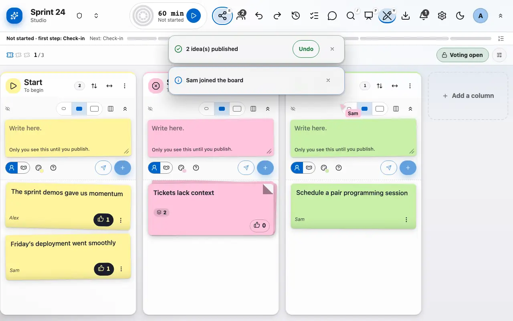
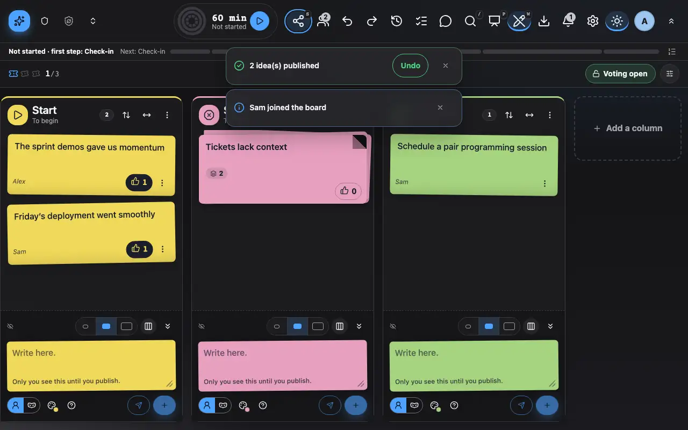
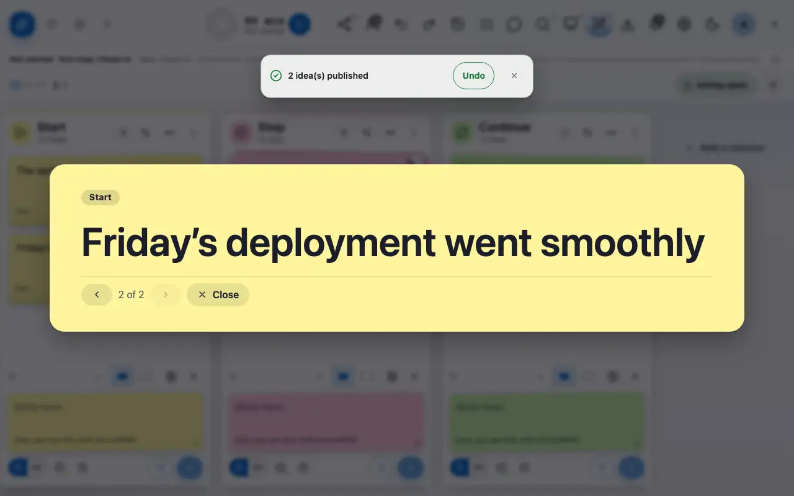
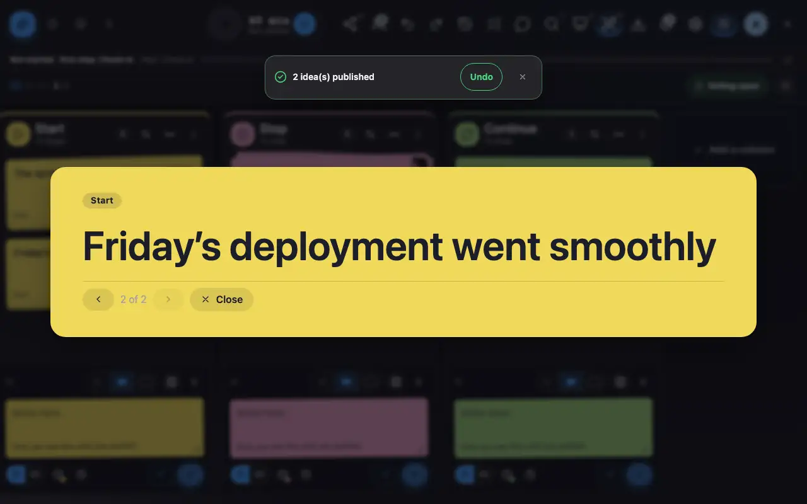
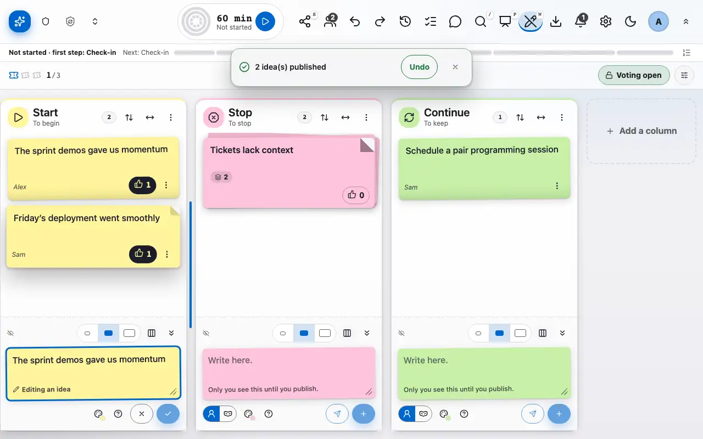
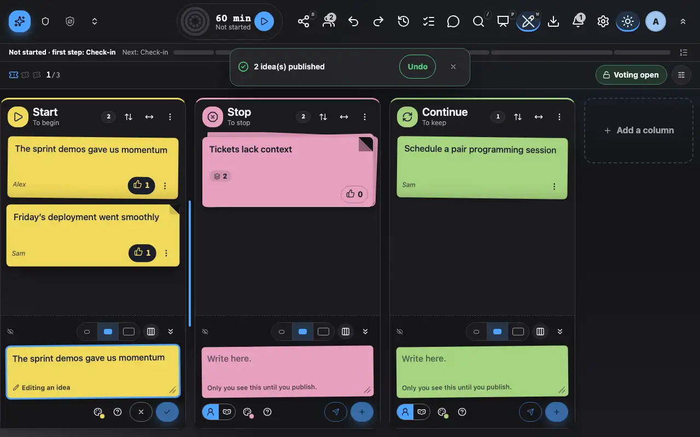
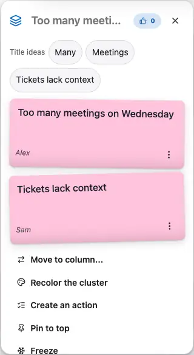
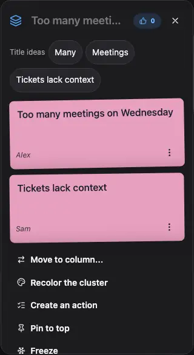

Write and publish ideas
Ideas stay private until you publish them.
1 Each column has its own field at the top, drafts stay on your device.
Each column has its own field, at the foot of the column under its notes (it stays in view while the notes scroll), labelled "Only you see this until you publish". Enter keeps the idea as a private draft on your device: it joins your tray, stacked above the field, as a tilted note with a "Draft" ribbon that nobody else sees. The counter in the toolbar says how many drafts are waiting, and "Publish all" sends them at once; Ctrl+Enter publishes straight away. Publish when you are ready: the idea appears for every participant.
On a phone, a "Write an idea" button opens the field in a sheet at the bottom of the screen: one chip per column says where the idea goes (the column in view by default), and the tray of drafts stays in the column. You can group similar ideas by dragging one onto another (on a touch screen, press and hold the idea until it lifts, then drag it; the idea's menu also has "Group with..."), and vote with the thumb.
A banner lets you undo a publication made by mistake for a few seconds.
A long idea shows its first lines and a "Read more" link that opens the rest (and "Show less" folds it back); the text is never smaller than 14 px. Notes of different heights pack into the column without holes, and the column scrolls. To fit more or fewer notes on your screen, press d to change the density (comfortable, compact, dense) and +, - and 0 to zoom the notes in, out and back to 100%. Both are personal, remembered on this device for each kind of screen, and also in the profile (advanced mode).
Notes move with restraint: the corner of a note peels when the mouse rests on it, your published idea flies to its place and sticks, an idea from someone else flutters in, and a group snaps into place when a note joins it. Each lasts under 0.4 second, none moves a note you are editing, and all of them stop with the "Reduced" motion setting or the system's reduced-motion preference.


2 A double click or double tap on an idea enlarges it on your device, the arrows move to the next idea and Escape closes it.
To read an idea at a comfortable size, double click it (or double tap it on a phone), press z on the selected idea, or choose "Zoom" in its 3-dot menu. The idea fills the screen on your device only: nobody else sees it and nothing is sent. The arrows (or Page up and Page down) move to the previous or next idea of the same column or cluster, and Escape or "Close" returns you to the board with the focus on the idea. A single tap, a vote, a drag or the menu are not slowed down or changed by the gesture, and an idea hidden by the facilitator cannot be zoomed.


3 To change an idea already published, open it in the writing zone: "Edit" in the three dots, or drag it onto the zone; it stays on the board with its votes until "Save". "Back to my drafts" takes it off the board for everyone and puts it on top of your stack.
A published idea can still be changed or taken back, by its author and by the facilitators (nobody else sees these choices). Edit (in the idea's 3-dot menu, or drag the idea onto the writing zone of a column) loads its text and colour into the composer, which shows "Editing an idea" with Save and Cancel. The idea stays on the board, with its votes and its cluster, until you save; the others see only a light "Being edited" mark on it, and a cancelled edit leaves no trace. A facilitator edits any idea the same way, also on a locked board.
Back to my drafts (same menu, or drop the idea on the draft stack that appears in the writing zone while you drag) takes the idea off the board for everyone and puts it, with its text and colour, at the top of its author's draft stack in the same column, ready to be rewritten and published again. When a facilitator sends someone else's idea back, it goes to its author's stack, never to the facilitator's, and its author gets a notice. Its votes go with it, so a confirmation counts them first (and asks too for a pinned idea or someone else's idea); once voting is closed a voted idea stays, and a frozen idea or a locked board refuses, with the reason as the tooltip of the disabled item. Undo (Ctrl+Z, or "Undo" in the notice) brings the idea back as a new one and removes its draft; the history lists it as "sent back to drafts", and a facilitator can restore from it. The item is offered only when everyone present runs a version that knows it. Both choices have a menu item for people who do not drag, with the keyboard or a screen reader announcing the result; the idea flies into the stack unless reduced motion is on.


4 The three dots on a group give the same quick actions as a note (colour, rename, move, merge, dissolve); a group opens inside its column and each column keeps its own.
A group has a three-dot menu on its stack, with the same look and keyboard use as the note menu (on a touch screen the dots are always visible, with a mouse they show when you rest on the stack). It offers the colour swatches and "More shades", Open, Rename (the group opens with its title selected), Create an action, Move to column, Merge into another group of the column, and Dissolve. Facilitators also get Pin and Freeze. The panel footer offers the same actions, so nothing is hidden in one place only. On a locked board only what does not change the group stays, and a group with votes asks before it is dissolved. Recolouring a group uses the same eight swatches and the same palette with "More shades" as a note, and recolours every note of the group except frozen ones.
Each column keeps its own open group. Opening a group in another column does not close the first one, so you can compare two columns side by side on a wide screen or a TV; opening another group in the same column replaces the one shown there. Escape closes the panel that has focus (or the one opened last) and puts focus back on its stack. On a phone a column fills the screen: a dot on a column tab tells which columns have an open group, and swiping back finds it open. What you open is only your view: nobody else's screen changes.

